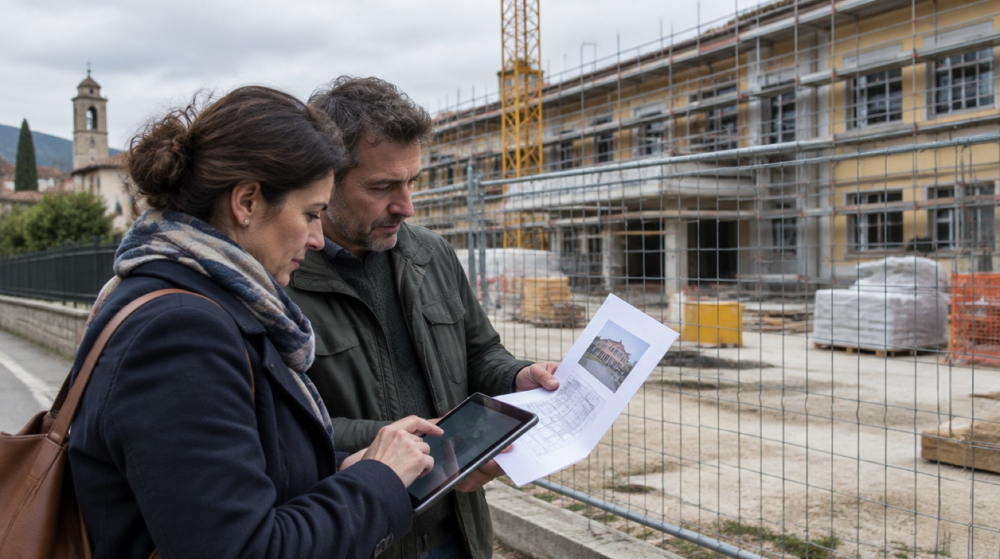

Quello che il Polpo trova nei dati pubblici mentre fa il suo lavoro: appalti, bilanci dei Comuni, diritti di chi compra e viaggia. Ogni numero ha la fonte e il metodo, e lo strumento per guardare il tuo caso.
Come scriviamo. Un indicatore non è un illecito: diciamo «senza gara», mai «irregolare». Non facciamo nomi di persone. I numeri sono quelli letti il 31 ottobre 2026; i dati degli strumenti si aggiornano, le storie no.

Braccio 6 · Controlla gli appalti
31 ottobre 2026
Il Comune che affida 5 miliardi senza gara (e perché non è vero)
Nei dati pubblici sugli appalti ci sono 2.938 affidamenti senza gara da oltre 5 milioni l'uno, alcuni da miliardi. Con ogni probabilità sono errori di registrazione, ma bastano a stravolgere le classifiche: Palermo passava dal 6% al 91%.
Un Comune di circa 1.500 abitanti in provincia di Rovigo risulta aver affidato senza gara un servizio di pulizia da 5,2 miliardi di euro. Un Comune in provincia di Como, il gas per gli edifici comunali: un miliardo. Palermo, due affidamenti da 2,7 miliardi ciascuno allo stesso fornitore, uno per gli impianti di videosorveglianza.
Sono cifre impossibili. La legge consente l'affidamento diretto fino a 140.000 euro per servizi e forniture e fino a 150.000 per i lavori. Gli oggetti di questi contratti (energia, gas, carburante, buoni pasto, pulizie) fanno pensare che nel campo dell'importo sia finito il valore dell'intera convenzione nazionale a cui il Comune ha aderito, non quello del suo contratto, che vale una frazione minima.
2.938affidamenti senza gara oltre i 5 milioni nei dati ANAC 2025
675enti coinvolti, di cui 94 Comuni
91% → 6%il valore senza gara di Palermo prima e dopo la correzione
Chi usa questi dati senza controllarli rischia di raccontare scandali che non esistono. Anche il Polpo, fino a oggi, mostrava Palermo con il 90,8% del valore affidato senza gara: tolti i due contratti impossibili, la quota è del 6,3%, fra le più basse delle grandi città.
Da oggi il Polpo conta queste procedure fra quelle dell'ente ma le tiene fuori da tutti i calcoli in euro, e lo scrive nella scheda. Il dato lo può correggere solo l'ente che l'ha inserito nella banca dati.
Fonte. ANAC, Banca dati nazionale dei contratti pubblici, dati aperti 2025 (CC BY-SA 4.0). Calcoli del Polpo civico.
Metodo. Procedure senza gara con importo a base d'asta di almeno 5 milioni di euro: oltre 33 volte il limite dell'affidamento diretto. Contate nel numero delle procedure, escluse dai valori in euro e dalla quota del primo fornitore.
Braccio 6 · Controlla gli appalti
31 ottobre 2026
Appena sotto la soglia: 21.330 affidamenti nell'ultimo 5% prima della gara
Gli affidamenti diretti del 2025 si ammassano appena sotto i 140.000 euro (150.000 per i lavori), il limite oltre il quale serve una gara: più del doppio di quelli della fascia precedente, otto volte quelli appena sopra.
Se gli importi degli affidamenti diretti fossero distribuiti senza pensare alla soglia, ogni fascia di valore conterrebbe più o meno gli stessi contratti di quella vicina. Non va così. Fra il 90 e il 95% della soglia ci sono 9.224 affidamenti; fra il 95 e il 100% ce ne sono 21.330. Appena sopra la soglia, dove serve una gara, scendono a 2.465.
Affidamenti senza gara del 2025 per importo, in percentuale della soglia oltre la quale serve una gara
50-55%14.877
55-60%12.540
60-65%11.271
65-70%9.252
70-75%9.944
75-80%8.318
80-85%7.476
85-90%8.652
90-95%9.224
95-100%21.330
100-105%2.465
105-110%2.011
110-115%1.547
115-120%1.408
La barra rossa è l'ultimo 5% prima della soglia. Su 1.223.653 affidamenti senza gara di lavori, servizi e forniture.
C'è una spiegazione innocente: molti enti fissano il valore di un contratto al massimo consentito, per avere margine, anche se poi spendono meno. E c'è quella che preoccupa: un contratto tagliato su misura per restare sotto il limite. I dati non bastano a distinguerle. Gli atti sì: la determina che motiva l'affidamento, il preventivo, le fatture.
Nella scheda di ogni ente il Polpo mostra quanti dei suoi affidamenti cadono in quell'ultimo 5%, li confronta con gli enti simili e prepara la richiesta di accesso agli atti.
Fonte. ANAC, Banca dati nazionale dei contratti pubblici, dati aperti 2025 (CC BY-SA 4.0). Calcoli del Polpo civico.
Metodo. Importo a base d'asta degli affidamenti senza gara diviso per la soglia dell'affidamento diretto (140.000 euro per servizi e forniture, 150.000 per i lavori, d.lgs. 36/2023, art. 50), in fasce del 5%.
Braccio 1 · Fa i conti dei tuoi diritti
31 ottobre 2026
Volo in ritardo: fino a 600 euro, senza regalarne un terzo
Per un ritardo di oltre tre ore all'arrivo il regolamento europeo prevede 250, 400 o 600 euro. Le società che fanno la richiesta per te trattengono in genere tra il 20 e il 35%. La lettera si può scrivere da soli, gratis.
Il regolamento europeo sui diritti dei passeggeri aerei (n. 261 del 2004) vale per tutti i voli in partenza da un aeroporto dell'Unione, con qualunque compagnia, e per quelli in arrivo nell'Unione con una compagnia europea. Se arrivi con più di tre ore di ritardo, o il volo è cancellato con poco preavviso, hai diritto a una compensazione fissa.
250 €voli fino a 1.500 km
400 €da 1.500 a 3.500 km, e tutti i voli dentro l'Unione oltre i 1.500 km
600 €oltre 3.500 km
La compagnia non paga se dimostra circostanze eccezionali, come il maltempo o lo sciopero dei controllori di volo. Lo sciopero del suo stesso personale, invece, non la esonera.
Molti passeggeri si rivolgono a società specializzate, che chiedono il rimborso al posto loro e trattengono in genere tra il 20 e il 35% della somma. Servono quando la compagnia non risponde e si arriva a una causa. Per cominciare basta una lettera: il Polpo calcola quanto ti spetta e la scrive con te. Vale anche per i treni, con regole diverse.
Fonte. Regolamento (CE) n. 261/2004; Corte di giustizia UE. Calcoli del Polpo civico.
Metodo. Importi e condizioni dal regolamento (CE) n. 261/2004, artt. 5-7, e dalla giurisprudenza della Corte di giustizia dell'Unione europea sul ritardo all'arrivo. Commissioni dalle condizioni pubblicate dalle principali società del settore, ottobre 2026.
Braccio 5 · Legge i conti del Comune
31 ottobre 2026
Su 100 euro di tasse e multe, Reggio Calabria ne incassa 58. Bologna 86
Quanto riescono a incassare i Comuni di ciò che è loro dovuto nell'anno? Nei rendiconti 2025 la mediana italiana è 82 euro su 100. Fra le Regioni si va da 63 a 90, fra le grandi città da 58 a 86.
Ogni anno un Comune accerta quello che gli spetta: l'IMU, la tassa sui rifiuti, le multe, le rette della mensa e dell'asilo. Poi deve incassarlo. Il Polpo ha messo a confronto i due numeri nei rendiconti 2025 di 7.808 Comuni: su 100 euro dovuti, quanti entrano davvero in cassa entro l'anno.
Euro incassati nell'anno su 100 di tributi ed entrate proprie, mediana dei Comuni di ogni Regione (Italia: 82,2)
Calabria63,0
Sicilia66,0
Campania73,5
Trentino-Alto Adige74,1
Lazio76,6
Valle d'Aosta78,3
Puglia79,3
Umbria79,5
Molise79,6
Friuli-Venezia Giulia80,6
Toscana80,8
Sardegna81,3
Abruzzo81,5
Basilicata83,3
Marche84,3
Emilia-Romagna84,6
Lombardia84,7
Liguria84,9
Piemonte88,2
Veneto90,1
In rosso le Regioni sotto la mediana italiana.
Fra le città con più di 150.000 abitanti il divario è più forte. Reggio Calabria incassa 58,3 euro su 100, Napoli 59,7, Catania 61,9, Palermo 62,2. In cima Bologna con 85,7, Parma con 85,5, Reggio Emilia e Genova con 84,9.
Reggio Calabria
Calabria
168.779
58,3
Napoli
Campania
909.013
59,7
Catania
Sicilia
298.054
61,9
Palermo
Sicilia
628.693
62,2
Bari
Puglia
315.831
67,9
Venezia
Veneto
249.490
69,2
Prato
Toscana
197.057
71,0
Roma
Lazio
2.747.290
71,6
Messina
Sicilia
217.033
71,8
Taranto
Puglia
186.011
72,0
Modena
Emilia-Romagna
184.074
72,7
Livorno
Toscana
153.154
74,1
Torino
Piemonte
853.196
74,2
Perugia
Umbria
162.050
74,9
Ravenna
Emilia-Romagna
156.340
76,4
Firenze
Toscana
361.705
78,9
Milano
Lombardia
1.365.698
79,8
Rimini
Emilia-Romagna
150.333
80,8
Trieste
Friuli-Venezia Giulia
198.388
81,1
Padova
Veneto
207.412
81,5
Verona
Veneto
255.039
82,3
Brescia
Lombardia
199.853
84,2
Genova
Liguria
564.080
84,9
Reggio Emilia
Emilia-Romagna
172.284
84,9
Parma
Emilia-Romagna
198.693
85,5
Bologna
Emilia-Romagna
390.151
85,7
Perché conta: quello che non si incassa va coperto. La legge obbliga i Comuni ad accantonare un fondo per i crediti che probabilmente non riscuoteranno, e quei soldi non possono essere spesi per i servizi. Detto in breve: chi paga copre anche chi non paga.
Attenzione a leggerlo come «evasione»: una parte di ciò che non si incassa nell'anno arriva negli anni dopo, e l'indicatore misura anche la rapidità degli uffici e la situazione economica di chi deve pagare.
Fonte. Ragioneria generale dello Stato, OpenBDAP, rendiconti dei Comuni 2025. Calcoli del Polpo civico.
Metodo. Riscossioni in conto competenza dei titoli 1 (tributi) e 3 (entrate extratributarie: multe, rette, canoni) divise per gli accertamenti degli stessi titoli, rendiconto 2025. Mediana dei Comuni per Regione.
Braccio 4 · Ti difende
31 ottobre 2026
Black Friday: 14 giorni per ripensarci online, 2 anni di garanzia ovunque
Il 27 novembre si compra molto, e in fretta. Due diritti da ricordare: il recesso di 14 giorni per gli acquisti online, senza dare spiegazioni, e la garanzia legale di 2 anni, anche in negozio.
Per gli acquisti online, per telefono o fuori dai negozi il Codice del consumo dà 14 giorni per cambiare idea, senza dire perché. Si contano dalla consegna. Il venditore deve restituire quello che hai pagato, compresa la spedizione standard. Le eccezioni sono poche: i prodotti fatti su misura, quelli che deperiscono, quelli sigillati per igiene una volta aperti, i contenuti digitali già scaricati.
In negozio il recesso non c'è: il cambio è una cortesia del venditore, che può fissare le sue regole.
14 giorniper recedere da un acquisto online, dalla consegna
2 annidi garanzia legale, online e in negozio
La garanzia legale invece vale ovunque, per due anni, e la dà il venditore, non il produttore. Se il prodotto si rompe o non funziona come promesso, hai diritto alla riparazione o alla sostituzione gratuita; se non è possibile, a uno sconto o alla restituzione dei soldi. La garanzia «commerciale» del produttore si aggiunge, non la sostituisce.
Il Polpo ti dice quale diritto vale nel tuo caso e prepara la lettera al venditore.
Fonte. Codice del consumo, d.lgs. 206/2005. Calcoli del Polpo civico.
Metodo. Diritto di recesso: Codice del consumo (d.lgs. 206/2005), artt. 52-59. Garanzia legale di conformità: artt. 128-135-septies.
Braccio 6 · Controlla gli appalti
31 ottobre 2026
In un Comune su quattro quasi tutto si compra senza gara
Nel 2025 1.971 Comuni hanno affidato senza gara almeno nove euro su dieci dei loro acquisti; 1.437 tutto. Sono quasi solo Comuni piccoli, e la legge in molti casi lo consente. Il confronto con i Comuni simili dice dove guardare.
Nei dati aperti dell'Autorità nazionale anticorruzione ci sono tutti i contratti pubblici avviati nel 2025. Il Polpo li ha letti ente per ente: per 7.495 Comuni le procedure bastano per fare un conto. In 1.971 di questi, uno su quattro, almeno il 90% del valore è passato senza gara. In 1.437 la quota è del 100%: nemmeno una gara in tutto l'anno.
Non è per forza un problema. Il codice dei contratti pubblici del 2023 permette di affidare direttamente i lavori fino a 150.000 euro e i servizi e le forniture fino a 140.000. Un Comune di mille abitanti che compra la carta, ripara il tetto della scuola e rinnova il programma dell'anagrafe può passare un anno intero senza superare quelle cifre. Infatti il fenomeno si concentra nei Comuni più piccoli e sparisce sopra i 60.000 abitanti.
Comuni che hanno affidato senza gara almeno il 90% del valore, per numero di abitanti
meno di 2.00041% · 1.315 su 3.222
da 2.000 a 5.00022% · 432 su 1.943
da 5.000 a 20.00012% · 212 su 1.833
da 20.000 a 60.0003% · 12 su 400
oltre 60.0000% · 0 su 97
Il numero diventa interessante quando un Comune si discosta dai suoi simili. Per questo la scheda del Polpo non dice mai «troppo» in assoluto: mette ogni Comune accanto a quelli della stessa fascia, alla media della sua Regione e ai Comuni con lo stesso numero di abitanti.
Senza gara non vuol dire illecito: vuol dire che l'impresa è stata scelta dall'ente, senza una competizione aperta. Il perché si legge negli atti, e il Polpo prepara la richiesta per averli.
Fonte. ANAC, Banca dati nazionale dei contratti pubblici, dati aperti 2025 (CC BY-SA 4.0). Calcoli del Polpo civico.
Metodo. Quota del valore a base d'asta delle procedure senza gara (affidamenti diretti e procedure negoziate senza bando) sul totale delle procedure avviate dal Comune nel 2025; Comuni con almeno 5 procedure. Gli affidamenti senza gara oltre i 5 milioni sono contati ma esclusi dai valori in euro (vedi «Il Comune che affida 5 miliardi senza gara»).
Braccio 3 · Trova la strada
31 ottobre 2026
Visita fra un anno? Ci sono tempi massimi, e un modo per farli rispettare
Sulla ricetta il medico scrive una lettera: U, B, D o P. Ognuna ha un tempo massimo, da 3 a 120 giorni. Se l'ASL non lo rispetta, puoi chiedere la prestazione in libera professione pagando solo il ticket.
Quasi nessuno lo guarda, ma sulla ricetta c'è un codice di priorità. Il medico lo sceglie in base all'urgenza, e il piano nazionale per le liste d'attesa fissa per ognuno un tempo massimo per la prima visita o il primo esame.
3 giorniU, urgente
10 giorniB, breve
30 / 60 giorniD, differibile: visite / esami
120 giorniP, programmata
Se al CUP ti danno una data oltre quel limite, la legge prevede una strada: chiedere all'ASL di farti avere la prestazione entro i tempi, anche in libera professione dentro l'ospedale, pagando solo il ticket (d.lgs. 124/1998, art. 3, comma 13). Ogni Regione ha il suo percorso e i suoi moduli.
Il Polpo ti dice qual è il tuo tempo massimo, ti spiega il percorso della tua Regione e scrive con te la richiesta.
I tempi valgono per i primi accessi, non per i controlli successivi, che il medico programma a parte.
Fonte. Ministero della Salute, Piano nazionale di governo delle liste d'attesa; d.lgs. 124/1998. Calcoli del Polpo civico.
Metodo. Classi di priorità e tempi massimi dal Piano nazionale di governo delle liste d'attesa; diritto alla prestazione in libera professione dal d.lgs. 124/1998, art. 3, comma 13.
Braccio 5 · Legge i conti del Comune
31 ottobre 2026
97 Comuni in deficit strutturale: 88 sono in Campania, Calabria e Sicilia
Secondo i parametri del Ministero dell'Interno, 97 Comuni risultano strutturalmente deficitari nei rendiconti 2025. E 895 Comuni chiudono l'anno con la parte disponibile del risultato in negativo: un disavanzo da coprire negli anni a venire.
Ogni anno, con il rendiconto, i Comuni compilano una tabella di parametri fissati dal Ministero dell'Interno: quanto pesano le spese fisse, quanto riescono a incassare, quanto debito hanno, se hanno debiti fuori bilancio o un disavanzo. Se almeno la metà è fuori posto, il Comune è «strutturalmente deficitario».
Non è un'etichetta: per legge (art. 243 del Testo unico degli enti locali) questi Comuni sono sottoposti a controlli centrali sulle assunzioni e devono coprire con le tariffe una quota minima del costo di alcuni servizi, come le mense e gli asili. Per chi ci vive vuol dire spesso servizi più cari o più ridotti.
C'è poi un segnale più largo. 895 Comuni chiudono il rendiconto con la parte disponibile del risultato in negativo: hanno un disavanzo da ripianare, cioè risorse degli anni futuri già impegnate per coprire il passato.
Il Polpo mostra per ogni Comune quali parametri sono fuori posto e come si confronta con i Comuni simili. I parametri sono quelli dichiarati dai Comuni stessi alla banca dati dello Stato.
Fonte. Ragioneria generale dello Stato, OpenBDAP, rendiconti dei Comuni 2025. Calcoli del Polpo civico.
Metodo. Condizione di ente strutturalmente deficitario come risulta dalla tabella dei parametri obiettivo del rendiconto 2025, e parte disponibile del risultato di amministrazione dello stesso rendiconto.
Braccio 4 · Ti difende
31 ottobre 2026
Il pacco in giacenza non esiste
Sotto le feste tornano gli SMS del finto corriere: un link, una piccola cifra da pagare, i dati della carta. Riconoscerli richiede dieci secondi. E sui falsi investimenti la CONSOB ha già oscurato 1.848 siti.
«Il tuo pacco è in giacenza, paga 1,99 euro per la nuova consegna». Il messaggio arriva quando aspetti davvero un pacco, ed è proprio questo il trucco. Il link porta a una pagina identica a quella del corriere, che chiede i dati della carta: da lì partono addebiti ben più alti.
I segnali sono sempre gli stessi: l'indirizzo del sito non è quello del corriere, c'è fretta («entro 24 ore»), si chiede un pagamento piccolo con un link. Un corriere non ti chiede di pagare con un link in un SMS. Se hai un dubbio, apri tu il sito ufficiale scrivendo l'indirizzo e cerca il numero di spedizione.
1.848siti di investimenti abusivi oscurati dalla CONSOB dal 2019
Lo stesso vale per i falsi investimenti, che promettono guadagni sicuri con le criptovalute o il trading: la CONSOB ne fa oscurare decine ogni settimana, ma ne nascono di nuovi.
Il Polpo legge il messaggio che hai ricevuto, controlla l'indirizzo nell'elenco dei siti oscurati e ti dice quali segnali ci sono. Non dice mai «sicuro»: dice cosa guardare.
Fonte. CONSOB, comunicati sull'oscuramento dei siti abusivi. Calcoli del Polpo civico.
Metodo. Segnali tipici delle truffe via SMS ed email; numero dei siti oscurati come dichiarato dalla CONSOB nel comunicato più recente letto il 25 ottobre 2026.
Braccio 6 · Controlla gli appalti
31 ottobre 2026
Un affidamento alla volta: 26.978 casi in cui la somma supera la soglia
In 5.194 enti lo stesso fornitore ha ricevuto più affidamenti diretti, ciascuno sotto il limite, che sommati lo superano. Spesso sono acquisti diversi e legittimi; a volte è un contratto spezzato in parti.
La legge lo dice chiaro: un appalto non può essere diviso in parti per evitare le regole delle gare (d.lgs. 36/2023, art. 14). Ma da fuori non si vede. Si vede solo che lo stesso ente, nello stesso anno, ha affidato direttamente allo stesso fornitore più contratti, ognuno sotto la soglia.
Nei dati del 2025 il Polpo ha trovato 26.978 casi in cui la somma di questi affidamenti supera la soglia della gara: 140.000 euro per servizi e forniture, 150.000 per i lavori. Riguardano 5.194 enti.
26.978coppie ente-fornitore con affidamenti diretti che sommati superano la soglia
5.194enti in cui succede almeno una volta
Molti casi hanno una ragione semplice: la manutenzione delle strade in primavera e quella dell'illuminazione in autunno sono lavori diversi, anche se li fa la stessa impresa. Altri meritano una domanda. Nella scheda dell'ente trovi i fornitori in questa situazione (le persone fisiche non sono mostrate) e la richiesta di accesso già pronta.
Un segnale non è un illecito. Prima di scriverne, un giornalista dovrebbe leggere le determine e chiedere all'ente.
Fonte. ANAC, dati aperti 2025: CIG, aggiudicazioni, aggiudicatari (CC BY-SA 4.0). Calcoli del Polpo civico.
Metodo. Per ogni ente e fornitore, somma degli affidamenti senza gara del 2025 sotto la soglia, separando i lavori da servizi e forniture; casi con almeno due affidamenti e somma pari o superiore alla soglia. Enti con almeno 5 procedure.
Braccio 6 · Controlla gli appalti
31 ottobre 2026
Nelle grandi città otto atti su dieci sono senza gara. Ma i soldi passano dalle gare
Nei 26 Comuni sopra i 150.000 abitanti gli affidamenti senza gara sono la grande maggioranza delle procedure: dal 65% di Torino al 92% di Modena. In valore, però, pesano molto meno: in 17 città su 26 sotto un quinto.
Una grande città fa centinaia di piccoli acquisti e qualche grande appalto. I piccoli passano quasi tutti senza gara, come la legge consente; i grandi passano per un bando. Così, contando le procedure, 22 città su 26 affidano senza gara più di tre volte su quattro. Contando gli euro, in 17 città su 26 la quota resta sotto il 20%.
Trieste
198.388
706
74,0 mln
89,5%
45,0%
Reggio Calabria
168.779
413
57,6 mln
77,2%
44,2%
Livorno
153.154
480
69,8 mln
89,6%
40,8%
Genova
564.080
1.408
234 mln
88,3%
37,0%
Parma
198.693
690
68,2 mln
84,1%
33,4%
Prato
197.057
545
73,5 mln
84,8%
31,7%
Rimini
150.333
751
122 mln
76,0%
29,1%
Ravenna
156.340
632
86,5 mln
84,7%
27,7%
Bari
315.831
659
345 mln
77,2%
22,9%
Verona
255.039
564
91,0 mln
87,4%
19,6%
Napoli
909.013
1.403
998 mln
83,4%
19,2%
Padova
207.412
691
158 mln
78,6%
18,1%
Perugia
162.050
466
98,7 mln
89,7%
16,2%
Reggio Emilia
172.284
536
164 mln
89,2%
15,1%
Firenze
361.705
1.398
496 mln
85,1%
14,5%
Bologna
390.151
626
340 mln
83,9%
14,3%
Roma
2.747.290
3.552
3,0 mld
73,1%
13,0%
Torino
853.196
834
206 mln
64,6%
13,0%
Taranto
186.011
360
115 mln
76,4%
12,2%
Modena
184.074
499
208 mln
92,4%
10,9%
Catania
298.054
387
256 mln
72,6%
9,3%
Brescia
199.853
696
434 mln
89,5%
7,8%
Milano
1.365.698
969
1,3 mld
70,1%
7,3%
Messina
217.033
434
414 mln
84,1%
7,3%
Palermo
628.693
680
588 mln
79,6%
6,3%
Venezia
249.490
775
2,7 mld
77,7%
0,9%
Tocca i titoli delle colonne per ordinare.
Per valore, in cima ci sono Trieste (45%), Reggio Calabria (44%) e Livorno (41%). Sono tre delle cinque città con il valore di appalti più basso del gruppo nel 2025, dove poche procedure spostano molto: a Trieste, per esempio, pesa l'energia elettrica comprata aderendo a una convenzione nazionale, che nei dati figura come affidamento diretto. In fondo ci sono Venezia (0,9%), Palermo (6,3%), Milano e Messina (7,3%). A Venezia il conto è dominato da due concessioni per la gestione di un impianto sportivo, che valgono insieme oltre due miliardi su tutta la loro durata.
Questi numeri riguardano solo le procedure avviate dal Comune. Le grandi città comprano anche attraverso società partecipate e centrali di committenza, che hanno una scheda a parte.
Fonte. ANAC, Banca dati nazionale dei contratti pubblici, dati aperti 2025 (CC BY-SA 4.0). Calcoli del Polpo civico.
Metodo. Procedure avviate nel 2025 dal Comune come stazione appaltante. Senza gara: affidamenti diretti e procedure negoziate senza bando. Valore a base d'asta; esclusi dai valori gli affidamenti senza gara oltre i 5 milioni.